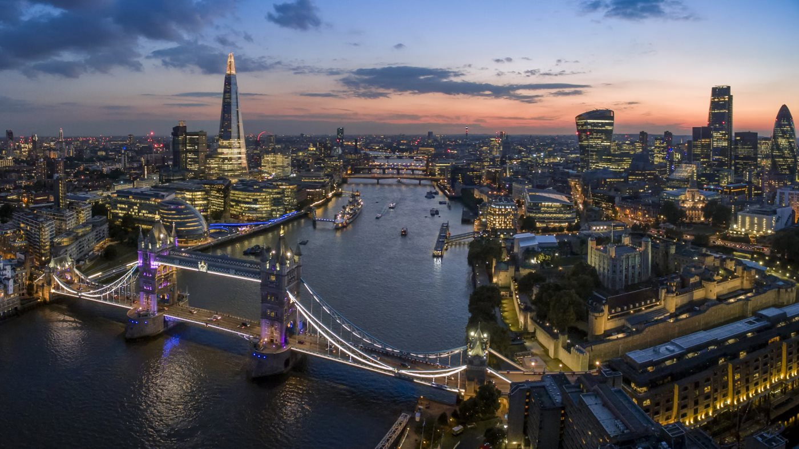

🇬🇧 المملكة المتحدة — لندن: دليل شامل للمستشار السياحي
دليل عملي ومحدث عن لندن: معلومات أساسية، برامج سياحية، معالم، مسافات، نصائح، وفيديوهات توضيحية.
ملخص مختصر
لندن هي عاصمة المملكة المتحدة وأكبر مدنها، وواحدة من أهم الوجهات السياحية عالمياً. تجمع بين التاريخ الملكي العريق (قصر باكنغهام وبرج لندن)، والمعالم الشهيرة عالمياً (بيغ بن وعين لندن)، والمتاحف العالمية المجانية (المتحف البريطاني)، والتسوق الفاخر (هارودز وأكسفورد ستريت)، والحياة الثقافية النابضة (مسارح ويست إند). وجهة مثالية للعائلات والأزواج وعشاق التاريخ والتسوق، وتوفر خيارات حلال واسعة بفضل الجالية المسلمة الكبيرة.
معلومات أساسية سريعة
التأشيرة والدخول
- التقديم إلكترونياً عبر موقع gov.uk ثم حجز موعد لطوابع البصمات في مركز التأشيرات.
- المدة المعتادة للمعالجة: 3–6 أسابيع — يُنصح بالتقديم مبكراً جداً.
- مدة الإقامة الاعتيادية: حتى 6 أشهر لزيارة السياحة.
- يُطلب غالباً إثبات حجز الفندق، تذكرة العودة، وكشف حساب بنكي.
نقاط أساسية للمستشار
- الأمان: لندن مدينة آمنة سياحياً، مناسبة للعائلات والمسافرين الأفراد، مع وعي بالجيب في المناطق المزدحمة.
- التكلفة: من أغلى المدن الأوروبية — وجبة بمطعم محلي من 15–30 جنيه، فندق 3 نجوم من 80–150 جنيه/ليلة.
- الطقس: معتدل معظم السنة، صيف لطيف (20–25°)، شتاء بارد ممطر — يفضل الخريف/الربيع.
- المواصلات: مترو الأنفاق (Tube) + حافلات حمراء + عبّارات — نظام نقل عام ممتاز ومترابط.
- الطعام: مطاعم حلال منتشرة جداً، وجالية مسلمة كبيرة، وأطباق بريطانية تقليدية (فيش آند تشبس، شاي العصر).
- الدين: مساجد ونشاط إسلامي واسع، خصوصاً في وايت تشابل وشرق لندن.
المعالم الرئيسية في لندن
👑 وستمنستر والعائلة المالكة
🏰 المعالم التاريخية
🏛️ المتاحف (معظمها مجاني)
🛍️ التسوق
🌆 مناطق ومعالم مميزة
أفكار برامج عملية
📋 جدول مقارنة البرامج
| النمط | المدة | النطاق | المناسب لـ |
|---|---|---|---|
| قصير | 4 أيام | وسط لندن + المعالم الكبرى | عطلة نهاية أسبوع طويلة |
| متوسط | 7 أيام | المعالم الكبرى • المتاحف • التسوق • ويست إند | عائلات / أزواج |
| طويل | 10 أيام | لندن كاملة + رحلات يومية (وندسور، أكسفورد، كامبريدج) | تجربة شاملة |
💡 نظرة سريعة
- قصر باكنغهام وبيغ بن وعين لندن — مثلث لندن الكلاسيكي.
- المتاحف مجانية — المتحف البريطاني والتاريخ الطبيعي والمعرض الوطني.
- التسوق — أكسفورد ستريت وهارودز وبوند ستريت وكوفنت غاردن.
- جولة بالحافلة الحمراء أو التايمز للاستمتاع بالمدينة.
- رحلات يومية — وندسور وأكسفورد وكامبريدج قريبة وسهلة.
تفاصيل البرامج اليومية
برنامج قصير — لندن (4 أيام)
| اليوم | الفعاليات |
|---|---|
| 1 | الوصول إلى هيثرو، انتقال للفندق، جولة مسائية على نهر التايمز وعين لندن. |
| 2 | قصر باكنغهام وتغيير الحرس، بيغ بن، دير وستمنستر، جولة وستمنستر. |
| 3 | برج لندن وجسر البرج، ثم المتحف البريطاني. |
| 4 | تسوق في أكسفورد ستريت وهارودز، ثم التوجه للمطار. |
برنامج متوسط — لندن (7 أيام)
| اليوم | الفعاليات |
|---|---|
| 1 | الوصول إلى لندن والاستراحة. |
| 2 | قصر باكنغهام وتغيير الحرس، بيغ بن، دير وستمنستر، عين لندن. |
| 3 | برج لندن وجسر البرج، جولة على نهر التايمز. |
| 4 | المتحف البريطاني، ثم المعرض الوطني وميدان ترافلغار. |
| 5 | هاري بوتر استوديوز أو مدام توسو، ثم ساحة ليستر. |
| 6 | تسوق: أكسفورد ستريت، هارودز، كوفنت غاردن، سوق كامدن. |
| 7 | جولة ختامية بمنطقة ساوث بانك، ثم المغادرة. |
برنامج طويل — لندن + رحلات يومية (10 أيام)
| اليوم | الفعاليات |
|---|---|
| 1 | الوصول إلى لندن والاستراحة. |
| 2 | قصر باكنغهام وتغيير الحرس، بيغ بن، دير وستمنستر. |
| 3 | برج لندن وجسر البرج، جولة على نهر التايمز. |
| 4 | المتحف البريطاني والمعرض الوطني. |
| 5 | رحلة يومية إلى وندسور — قلعة وندسور ومتحف مدام توسو. |
| 6 | رحلة يومية إلى أكسفورد — الجامعة والكليات التاريخية. |
| 7 | رحلة يومية إلى كامبريدج — التجديف في نهر كام. |
| 8 | تسوق فاخر: بوند ستريت، هارودز، نايتس بريدج، سيلفريدجز. |
| 9 | مسرح ويست إند وساحة ليستر + سوق بورو للطعام. |
| 10 | تسوق نهائي ثم المغادرة. |
المسافات بين المعالم والمدن
| من | إلى | المدة | المسافة |
|---|---|---|---|
| مطار هيثرو | وسط لندن (بيكاديللي) | 45–60 دقيقة (مترو) • 15 دقيقة (قطار سريع) | 25 كم |
| مطار غاتويك | وسط لندن (فيكتوريا) | 30 دقيقة (قطار سريع) | 45 كم |
| قصر باكنغهام | بيغ بن وبرلمان | 15 دقيقة مشي | 1.5 كم |
| بيغ بن | عين لندن | 10 دقائق مشي | 1 كم |
| وسط لندن | برج لندن وجسر البرج | 20 دقيقة (مترو) | 5 كم |
| وسط لندن | المتحف البريطاني | 15 دقيقة (مترو) | 3 كم |
| لندن | وندسور | 1 ساعة (قطار) | 35 كم |
| لندن | أكسفورد | 1 ساعة (قطار) | 90 كم |
| لندن | كامبريدج | 1 ساعة (قطار) | 90 كم |
| لندن | برايتون | 1 ساعة (قطار) | 85 كم |
| لندن | ستونهنج | 1.5 ساعة (قطار + حافلة) | 130 كم |
| لندن | مانشستر | 2.5 ساعة (قطار) | 320 كم |
الطقس والمواسم
🌸 الربيع
مارس — مايو
معتدل ومزدهر بالورود — مثالي للحدائق والتنزه.
☀️ الصيف
يونيو — أغسطس
أفضل وقت للزيارة — أيام طويلة وأجواء لطيفة (20–25°).
🍂 الخريف
سبتمبر — نوفمبر
ألوان الخريف وأجواء مريحة — مناسب للتسوق والمتاحف.
❄️ الشتاء
ديسمبر — فبراير
بارد وممطر مع أجواء الكريسماس — أسعار فنادق أقل.
نصائح عملية
💰 المال والصرف
- العملة الرسمية: الجنيه الإسترليني (GBP).
- صرف تقريبي: 1 جنيه ≈ 4.7–4.8 ريال سعودي (تحقق من السعر الحالي).
- البطاقات (Visa/Mastercard) مقبولة في كل مكان تقريباً.
- تُفضل المدفوعات اللاتلامسية (Contactless) عن النقد.
- احتفظ ببعض النقد للحالات الصغيرة، لكن لا تقبل كل المحلات النقد.
🍽️ الطعام والشراب
- فيش آند تشبس: الطبق البريطاني الأشهر — سمك مقلي وبطاطس.
- شاي العصر: تجربة بريطانية تقليدية أنيقة.
- الإفطار الإنجليزي الشامل: أساسي للعائلة.
- مطاعم حلال ومتاجر حلال منتشرة جداً خصوصاً في شرق لندن.
- سوق بورو وكامدن مثاليان لتجربة الأطعمة العالمية.
🚇 المواصلات
- مترو الأنفاق (Tube): أفضل وسيلة للتنقل السريع في المدينة.
- بطاقة Oyster أو الدفع بالبطاقة/الهاتف (Contactless) للتنقل.
- الحافلات الحمراء: تجربة سياحية بأسعار ثابتة.
- التكاسي السوداء و UBER متوفرة — تأكد أن تأخذ UBER أو السائق بالعداد.
- هياثرو إكسبريس: أسرع وسيلة من المطار (15 دقيقة).
📱 اتصال وإنترنت
- شرائح SIM: EE، Vodafone، O2، Three — تغطية ممتازة.
- في 2026 لا تزال رسوم التجوال مع بعض المشغلين الخليجية مدفوعة — يُفضّل شريحة محلية.
- واي فاي مجاني في أغلب المقاهي والمتاحف والفنادق.
- تطبيق Google Maps و Citymapper ممتازان لوسائل النقل.
- تطبيقات التوصيل: Uber و Bolt متوفرة.
أرقام مهمة
فيديوهات توضيحية
خريطة الوجهة

⚠️ ملاحظة: هذه الصفحة مرجع تعليمي عام — تحقق من المعلومات الرسمية (التأشيرة، أسعار الصرف، القيود، وأرقام الطوارئ) قبل أي عرض للعميل. الأسعار والمعلومات قابلة للتغير.